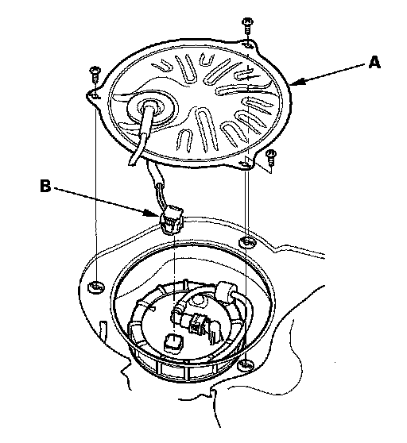
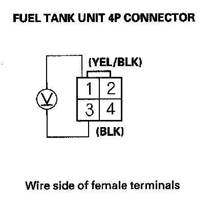
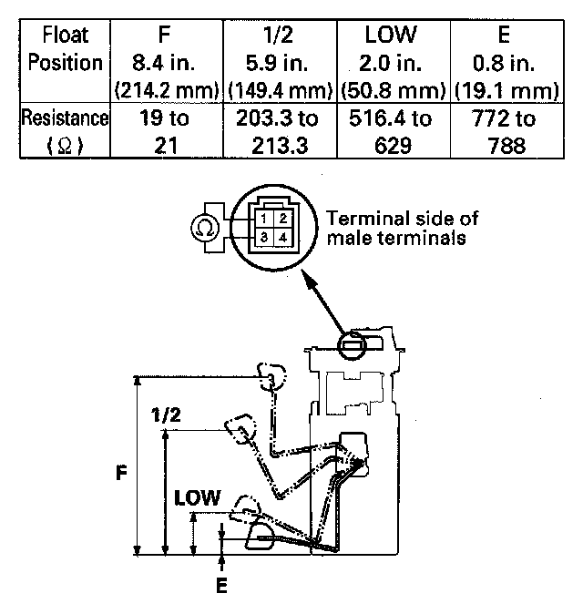

Fuel Gauge Sender: Testing and Inspection
Fuel Gauge Sending Unit TestNOTE: For the fuel gauge system circuit diagram, refer to the Gauges Circuit Diagram.
1. Check the No. 21 METER (7.5 A) fuse in the under-dash fuse/relay box before testing.
2. Check for body electrical system DTCs.
- If no problem is found, go to step 3.
- If DTC B1175 or B1176 is indicated, go to the indicated DTCs troubleshooting.
3. Turn the ignition switch OFF.
4. Remove the second row seat.

5. Remove the access panel (A) from the floor.
6. Disconnect the fuel tank unit 4P connector (B).

7. Measure voltage between fuel tank unit 4P connector terminals No. 1 and No. 3 with the ignition switch ON (II). There should be battery voltage.
- If the voltage is OK, go to step 8.
- If the voltage is not as specified, check for:
- a short in the YEL/BLK wire to ground.
- an open in the YEL/BLK or BLK wire.
8. Turn the ignition switch OFF.
9. Remove the fuel tank unit from the fuel tank.

10. Measure resistance between fuel tank unit 4P connector terminals No. 1 and No. 3 with the float at E (EMPTY), LOW (LOW FUEL INDICATOR), 1/2 (HALF FULL), and F (FULL) positions. If you do not get the following readings, replace the fuel gauge sending unit.
11. Reconnect the fuel tank unit 4P connector.
12. Remove the No. 7 BACK UP (10 A) fuse from the under-dash fuse/relay box for at least 10 seconds, then reinstall it.
13. Turn the ignition switch ON (II).
14. Check that the pointer of the fuel gauge indicates "F" with the float at F.
- If the pointer of the fuel gauge does not indicate "F", replace the gauge assembly.
- If the gauge is OK, the test is complete.
NOTE:
- The pointer of the fuel gauge returns to the bottom of the gauge dial when the ignition switch is OFF, regardless of the fuel level.
- Remove the No. 7 BACK UP (10 A) fuse from the under-dash fuse/relay box for at least 10 seconds after completing troubleshooting, otherwise it may take up to 20 minutes for the fuel gauge to indicate the correct fuel level.